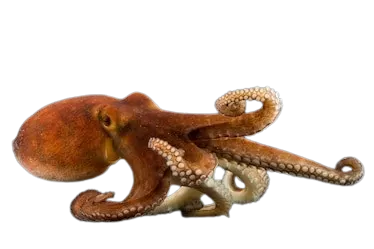

Animal Grimoire
Octopus
Habitat
Coastal and ShorelineCoral ReefsOpen Water
Scientific Name
Octopoda
Type
Marine
Correspondences7
Dreams1
Creature of the Depths
Living in deep waters, the octopus carries two main strands of meaning. Because it dwells in the depths and bears the look of a sea monster, it is linked with the spirits of the Underworld and with the Devil.
The Cretan Spiral
Where it appears as a motif in Cretan art, however, the octopus carries a symbolism close to that of the spiral and the spider's web, both of which stand as emblems of the creation of the Universe.